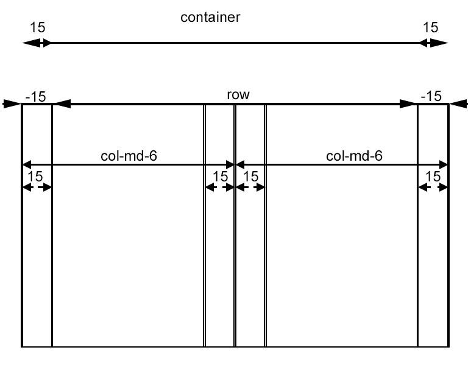

Основная разработка сайта для верстальщика начинается с правильного построения сетки сайта. Если вы используете Bootstrap 3, то понимание сетки фреймворка крайне необходимо. В этой небольшой заметки я постараюсь рассмотреть основные нюансы при использовании сетки от Bootstrap. В статья в основном дан перевод документации к Bootstrap Grid, но также приведены некоторые мои дополнения.
Bootstrap требуется охватывающий элемент, чтобы обернуть контент сайта и стать домом для нашей сеточной системы. Для своего проекта вы можете использовать один из двух вариантов.
Используйте .container для отзывчивого с фиксированной шириной контейнера (максимальная ширина блока 1170px).
Используйте .container-fluid для контейнера с шириной на всю область просмотра.
Bootstrap включает отзывчивую, изначально ориентированную на мобильные устройства сетку, которая масштабируется, начиная с 12 столбцов как на устройствах или при изменении окна просмотра. Она включает предопределенные классы для простой настройки разметки, а также мощные примеси для генерации более семантической разметки .
Итак подходим к сути.
Сетки используют для построения макетов страниц посредством компоновки строк и колонок, которые содержат контент.
Основы работы сетки Bootstrap:
Чтобы понять все эти принципы было еще проще взгляните на изображение ниже:

Для сетки используются следующие медиа-запросы (из LESS-файла):
/* Совсем маленькие устройства (phones, меньше 768px) */
/* Медиа-запросы отсутствуют, так как эти стили стоят в
Bootstrap по умолчанию */
/* Небольшие устройства (планшеты, 768px и выше) */
@media (min-width: @screen-sm-min) { ... }
/* Средние устройства (мониторы, 992px and up) */
@media (min-width: @screen-md-min) { ... }
/* Большие устройства (большие мониторы, 1200px and up) */
@media (min-width: @screen-lg-min) { ... }
|
Совсем небольшие устройства |
Небольшие устройства |
Средние устройства |
Большие устройства | |
|
Поведение сетки |
Горизонтальное все время |
Сжатая изначально, горизонтальная выше точки останова (видимо имеется ввиду, когда ширина устройства меньше, чем предусмотрено классом – смотрите медиа запросы) | ||
|
Ширина контейнера |
None (auto) |
750px |
970px |
1170px |
|
Префикс класса |
.col-xs- |
.col-sm- |
.col-md- |
.col-lg- |
|
# колонок |
12 | |||
|
Ширина колонки |
Auto |
~62px |
~81px |
~97px |
|
Ширина зазора |
30px (15px с каждой стороны колонки) | |||
|
Вложение |
Yes | |||
|
Смещение |
Yes | |||
|
Упорядочение колонки |
Yes | |||
Пример: сложенные по горизонтали
Используя класс .col-md-*, вы создаете сетку, которая начинает складываться (образуется стек) на мобильных устройствах; при этом на средних устройствах ячейки расположены горизонтально. Расположите колонки сетки в любом .row.
Пример на официальном сайте - stacked-to-horizontal
HTML
<div class="row">
<div class="col-md-1">.col-md-1</div>
<div class="col-md-1">.col-md-1</div>
<div class="col-md-1">.col-md-1</div>
<div class="col-md-1">.col-md-1</div>
<div class="col-md-1">.col-md-1</div>
<div class="col-md-1">.col-md-1</div>
<div class="col-md-1">.col-md-1</div>
<div class="col-md-1">.col-md-1</div>
<div class="col-md-1">.col-md-1</div>
<div class="col-md-1">.col-md-1</div>
<div class="col-md-1">.col-md-1</div>
<div class="col-md-1">.col-md-1</div>
</div>
<div class="row">
<div class="col-md-8">.col-md-8</div>
<div class="col-md-4">.col-md-4</div>
</div>
<div class="row">
<div class="col-md-4">.col-md-4</div>
<div class="col-md-4">.col-md-4</div>
<div class="col-md-4">.col-md-4</div>
</div>
<div class="row">
<div class="col-md-6">.col-md-6</div>
<div class="col-md-6">.col-md-6</div>
</div>
Поменяйте сетку с фиксированной шириной на сетку с шириной на все окно браузера при помощи замены .container на .container-fluid.
HTML
<div class="container-fluid">
<div class="row">
...
</div>
</div>
Пример: мобильники и настольные устройства
Не хотите, чтобы ваши колонки складывались на мобильных устройствах? Применяйте к колонкам классы для небольших и средних устройств: .col-xs-*, .col-md-*. Смотрите пример ниже для лучшего понимания принципов работы использования нескольких классов.
Пример на официальном сайте - grid-example-mixed
HTML
<!-- Stack the columns on mobile by making one full-width and the other half-width -->
<div class="row">
<div class="col-xs-12 col-md-8">.col-xs-12 .col-md-8</div>
<div class="col-xs-6 col-md-4">.col-xs-6 .col-md-4</div>
</div>
<!-- Columns start at 50% wide on mobile and bump up to 33.3% wide on desktop -->
<div class="row">
<div class="col-xs-6 col-md-4">.col-xs-6 .col-md-4</div>
<div class="col-xs-6 col-md-4">.col-xs-6 .col-md-4</div>
<div class="col-xs-6 col-md-4">.col-xs-6 .col-md-4</div>
</div>
<!-- Columns are always 50% wide, on mobile and desktop -->
<div class="row">
<div class="col-xs-6">.col-xs-6</div>
<div class="col-xs-6">.col-xs-6</div>
</div>
Пример: мобильники, планшеты и настольные устройства
Основываясь на предыдущем примере создайте еще более мощный и динамический макет с классом для планшетов .col-sm-*.
http://getbootstrap.com/css/#grid-example-mixed-complete
Пример на официальном сайте - grid-example-mixed-complete
HTML
<div class="row">
<div class="col-xs-12 col-sm-6 col-md-8">.col-xs-12 .col-sm-6 .col-md-8</div>
<div class="col-xs-6 col-md-4">.col-xs-6 .col-md-4</div>
</div>
<div class="row">
<div class="col-xs-6 col-sm-4">.col-xs-6 .col-sm-4</div>
<div class="col-xs-6 col-sm-4">.col-xs-6 .col-sm-4</div>
<!-- Optional: clear the XS cols if their content doesn't match in height -->
<div class="clearfix visible-xs-block"></div>
<div class="col-xs-6 col-sm-4">.col-xs-6 .col-sm-4</div>
</div>
Пример: смещение колонки на новую строку
Если в строке расположено более 12 колонок, каждая группа дополнительных колонок, как самостоятельная единица сместится на новую линию.
Пример на официальном сайте - grid-example-wrapping
HTML
<div class="row">
<div class="col-xs-9">.col-xs-9</div>
<div class="col-xs-4">.col-xs-4<br>Since 9 + 4 = 13 > 12, this 4-column-wide div gets wrapped onto a new line as one contiguous unit.</div>
<div class="col-xs-6">.col-xs-6<br>Subsequent columns continue along the new line.</div>
</div>
Имея сетку из четырех колонок вы, возможно, столкнетесь с проблемой, когда для соответствующих точек останова ваши столбцы не выровнялись правильно, так как один столбец выше другого. Чтобы исправить это, используйте комбинацию класса .clearfix и наших служебных отзывчивых классов.
Пример на официальном сайте - grid-responsive-resets
HTML
<div class="row">
<div class="col-xs-6 col-sm-3">.col-xs-6 .col-sm-3</div>
<div class="col-xs-6 col-sm-3">.col-xs-6 .col-sm-3</div>
<!-- Add the extra clearfix for only the required viewport -->
<div class="clearfix visible-xs-block"></div>
<div class="col-xs-6 col-sm-3">.col-xs-6 .col-sm-3</div>
<div class="col-xs-6 col-sm-3">.col-xs-6 .col-sm-3</div>
</div>
In addition to column clearing at responsive breakpoints, you may need to reset offsets, pushes, or pulls. See this in action in the grid example.
HTML
<div class="row">
<div class="col-sm-5 col-md-6">.col-sm-5 .col-md-6</div>
<div class="col-sm-5 col-sm-offset-2 col-md-6 col-md-offset-0">.col-sm-5 .col-sm-offset-2 .col-md-6 .col-md-offset-0</div>
</div>
<div class="row">
<div class="col-sm-6 col-md-5 col-lg-6">.col-sm-6 .col-md-5 .col-lg-6</div>
<div class="col-sm-6 col-md-5 col-md-offset-2 col-lg-6 col-lg-offset-0">.col-sm-6 .col-md-5 .col-md-offset-2 .col-lg-6 .col-lg-offset-0</div>
</div>
Сместите колонки направо, используя класс .col-md-offset-*. Эти классы увеличивают левое поле колонки на * колонок. Например, .col-md-offset-4 сместит .col-md-4 на четыре колонки.
Пример на официальном сайте - grid-offsetting
HTML
<div class="row">
<div class="col-md-4">.col-md-4</div>
<div class="col-md-4 col-md-offset-4">.col-md-4 .col-md-offset-4</div>
</div>
<div class="row">
<div class="col-md-3 col-md-offset-3">.col-md-3 .col-md-offset-3</div>
<div class="col-md-3 col-md-offset-3">.col-md-3 .col-md-offset-3</div>
</div>
<div class="row">
<div class="col-md-6 col-md-offset-3">.col-md-6 .col-md-offset-3</div>
</div>
Чтобы вложить ваш контент в существующую сетку, добавьте новую .row и установите .col-md-* колонок внутри уже существующей .col-sm-* колонки.
Пример на официальном сайте - grid-nesting
HTML
<div class="row">
<div class="col-sm-9">
Level 1: .col-sm-9
<div class="row">
<div class="col-xs-8 col-sm-6">
Level 2: .col-xs-8 .col-sm-6
</div>
<div class="col-xs-4 col-sm-6">
Level 2: .col-xs-4 .col-sm-6
</div>
</div>
</div>
</div>
Порядок для колонок сетки можно изменить при помощи классов .col-md-push-* и .col-md-pull-*.
Пример на официальном сайте - grid-column-ordering
HTML
<div class="row">
<div class="col-md-9 col-md-push-3">.col-md-9 .col-md-push-3</div>
<div class="col-md-3 col-md-pull-9">.col-md-3 .col-md-pull-9</div>
</div>